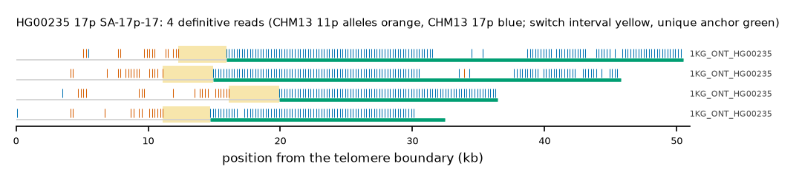

HG00235 17p: SA-17p-17
Claim HG00235|17p|SA-17p-17. All claims
- cohort
- 1000 Genomes ONT
- individual
- HG00235
- haplotype
- hap2
- arm
- 17p
- allele
- SA-17p-17 (foreign)
- model
- donor CHM13 11p, proximal CHM13 17p, recipient CHM13 17p, pattern DP
- claimed end(s)
HG00235#2#CM094404.1#L- assembly switch
- 11,457 bp from the telomere boundary; on CHM13 chr17:12317
- v1 verdict
- confirmed (confirmed)
- definitive tier
- definitive
- reads
- 4 conclusive switch-concordant, 0 discordant, 0 contradicting, 8 consistent; 4 definitive (1KG_ONT_HG00235)
- by tier
- definitive:4;consistent:8
- source
- https://ftp.1000genomes.ebi.ac.uk/vol1/ftp/data_collections/1KG_ONT_VIENNA/t2t/HG00235.t2t.cram
- note
- confirmed:robust; keep

Conclusive and contradicting reads (4)
8 further reads are consistent (switch test passed, but no terminal telomere, anchor or integrity); they are
listed in reads.tsv.gz. Switch: 95% interval in subtelomere coordinates (kb from the
telomere boundary) and projected on CHM13 17p. Each samtools command prints the read's record
from its public file (CRAM: add the CHM13 v2.0 FASTA as -T).
| read | dataset | tier | length | switch (subtelomere, kb) | switch on CHM13 | donor units / purity | proximal units / purity | anchor (CHM13, MAPQ, unique) | own-assembly best end | fetch |
|---|---|---|---|---|---|---|---|---|---|---|
bf16c694-abc5-4d8e-8239-25c8d1ee4887 | 1KG_ONT_HG00235 | definitive | 38,835 | 16.1-19.9 | chr17:12008-15808 | 20 / 0.95 | 83 / 1.00 | chr17:15704-34549, 60, 18.8 kb | HG00235#2#CM094404.1#L (93.1%) ✓ | samtoolssamtools view -F 0x900 -T chm13v2.0.fa.gz -X 'https://ftp.1000genomes.ebi.ac.uk/vol1/ftp/data_collections/1KG_ONT_VIENNA/t2t/HG00235.t2t.cram' 'https://ftp.1000genomes.ebi.ac.uk/vol1/ftp/data_collections/1KG_ONT_VIENNA/t2t/HG00235.t2t.cram.crai' 'chr17:1-5000' | awk -v r='bf16c694-abc5-4d8e-8239-25c8d1ee4887' '$1==r' |
48b699d1-90bf-443f-826c-5f6bc2bdd10d | 1KG_ONT_HG00235 | definitive | 46,721 | 11.1-14.9 | chr17:12009-15809 | 16 / 1.00 | 116 / 0.99 | chr17:16608-47853, 60, 31.2 kb | HG00235#2#CM094404.1#L (97.2%) ✓ | samtoolssamtools view -F 0x900 -T chm13v2.0.fa.gz -X 'https://ftp.1000genomes.ebi.ac.uk/vol1/ftp/data_collections/1KG_ONT_VIENNA/t2t/HG00235.t2t.cram' 'https://ftp.1000genomes.ebi.ac.uk/vol1/ftp/data_collections/1KG_ONT_VIENNA/t2t/HG00235.t2t.cram.crai' 'chr17:1-5000' | awk -v r='48b699d1-90bf-443f-826c-5f6bc2bdd10d' '$1==r' |
52806e2b-4801-43e1-a727-6f5ab1772890 | 1KG_ONT_HG00235 | definitive | 47,604 | 11.1-14.7 | chr17:12229-15829 | 14 / 0.93 | 76 / 1.00 | chr17:16627-35994, 60, 19.4 kb | HG00235#2#CM094404.1#L (92.3%) ✓ | samtoolssamtools view -F 0x900 -T chm13v2.0.fa.gz -X 'https://ftp.1000genomes.ebi.ac.uk/vol1/ftp/data_collections/1KG_ONT_VIENNA/t2t/HG00235.t2t.cram' 'https://ftp.1000genomes.ebi.ac.uk/vol1/ftp/data_collections/1KG_ONT_VIENNA/t2t/HG00235.t2t.cram.crai' 'chr17:1-5000' | awk -v r='52806e2b-4801-43e1-a727-6f5ab1772890' '$1==r' |
d8467f00-ec04-4fac-8d23-35027d6d26d5 | 1KG_ONT_HG00235 | definitive | 63,754 | 12.3-15.9 | chr17:12151-15751 | 15 / 0.93 | 133 / 1.00 | chr17:15752-51584, 60, 35.8 kb | HG00235#2#CM094404.1#L (96.5%) ✓ | samtoolssamtools view -F 0x900 -T chm13v2.0.fa.gz -X 'https://ftp.1000genomes.ebi.ac.uk/vol1/ftp/data_collections/1KG_ONT_VIENNA/t2t/HG00235.t2t.cram' 'https://ftp.1000genomes.ebi.ac.uk/vol1/ftp/data_collections/1KG_ONT_VIENNA/t2t/HG00235.t2t.cram.crai' 'chr17:1-5000' | awk -v r='d8467f00-ec04-4fac-8d23-35027d6d26d5' '$1==r' |
Files
CRAM/BAM on CHM13 v2.0, BAM on the person's own assembly windows and the window FASTA: release asset subtel_read_evidence_v1_1KG_ONT.tar.gz, directory read_evidence_v1/1KG_ONT/HG00235__17p__SA-17p-17/ (downloads).
Re-derive this verdict
git clone https://github.com/jlanej/human-subtelomere-atlas && cd human-subtelomere-atlas
evidence/replicate_claim.sh 'HG00235|17p|SA-17p-17'The script fetches the cited reads from the public source by region and read ID, re-runs the frozen criteria and compares every per-read and claim verdict with this page (details).